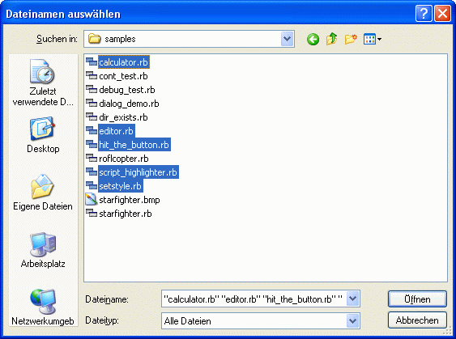

Datei- und Verzeichnisauswahl
Nicht selten kommt es vor, dass man Datei- oder Verzeichnispfade vom Benutzer abfragen muss. Der Einsatz einer INPUTBOX wäre hier zwar auch möglich, aber unangebracht. Zur Lösung dieses Problems stellt RapidBATCH drei Dialoge zur Verfügung: OPENBOX, SAVEBOX und FOLDERBOX!
Die Dialoge OPENBOX und SAVEBOX ermöglichen die Eingabe eines Dateinamens sowie das Browsen durch Verzeichnisse. Des weiteren kann ein Dateifilter gesetzt werden, der nur bestimmte Dateitypen zur Anzeige bringt.Der einzige Unterschied zwischen OPENBOX und SAVEBOX besteht darin, dass eine OPENBOX einen "Datei öffnen"-Dialog bereitstellt, wärend eine SAVEBOX einen "Datei speichern"-Dialog anzeigt.
Folgendes Beispiel zeigt die Verwendung der OPENBOX zur Auswahl einer Datei.
openbox [datei] = 'Bitte wählen Sie eine Datei aus:', 'Alle Dateien|*.*'
echo 'Der Pfad zur gewählten Datei lautet: ' # [datei]
end

Die OPENBOX-Funktion stellt einen "Datei öffnen"-Dialog zur Verfügung
Dieser Dateifilter kann sehr individuell gestaltet werden und ermöglicht den Einsatz der Wildcard-Platzhalter * und ?.
Übergeben wird der Dateifilter als Liste ähnlich wie bei LISTBOX oder TRAYMENU, nur dass hier nach folgendem Muster vorgegangen werden muss:
Filterbezeichnung | Filter
Obiges Beispiel legt als einen Filter *.* (alle Dateinamen, die eine Dateiendung haben) an und benennt ihn mit "Alle Dateien".Wenn wir nun alle Textdateien (Dateienung: TXT) filtern möchten, verwenden wir folgenden Filter:
Textdateien|*.txt
Die OPENBOX ermöglich dem Benutzer auch die Auswahl eines Filters, falls mehrere gegeben sind. Man kann also einfach einen weiteren Filter an einen bereits vorhandenen dranhängen, indem man das obige Muster einfach durch ein weiteres Pipe-Listentrennzeichen vom vorhergehenden Filter trennt. Folgendes beispiel legt drei Filter an.
EXE-Dateien|*.exe|COM-Dateien|*.com|Batch-Dateien|*.bat
Es lassen sich auch mehrere Filtermasken unter einem einzelnen Filternamen speichern. Hierbei trennt man jeden Filter durch ein Semikolon. Folgender Filter ermöglich die Anzeiger aller Dateien oder nur die Anzeige von ausführbaren Programmdateien (EXE, COM, BAT):
Ausführbare Programme|*.exe;*.com;*.bat|Alle Dateien|*.*
Standardmässig lässt sich in einem OPENBOX- bzw. SAVEBOX-Dialog nur eine einzelne Datei anwählen. Eine Mehrfach-Auswahl ist jedoch auch ohne Probleme möglich, indem man für die OPENBOX die Variable [OpenBox_MultiSel] auf den Wert '0' setzt (äquivalent [SaveBox_MultiSel] für die SAVEBOX). Ist diese Variable auf dem Wert '0', so lassen sich mehrere Dateinamen aus der Dateiliste auswählen. Bestätigt der Benutzer nun seine Eingabe mit OK, gibt der Dialog eine Liste der Dateinamen- und Pfade, jeweils getrennt durch Pipe-Zeichen, zurück, wobei als erstes Listenelement der absolute Pfad zu den Dateien angegeben wird und in den darauf folgenden Elementen die einzelnen Dateiamen (ohne den Pfad).
Folgendes Beispiel zeigt, wie man eine Mehrfach-Dateiauswahl verarbeitet.
rem Mehrfachauswahl ermöglichen
[OpenBox_MultiSel] = '0'
rem Dateien auswählen
openbox [dateiliste] = 'Dateinamen auswählen', 'Alle Dateien|*.*'
if [dateiliste] ! ''
rem Pfad auslesen
gettok [pfad] = [dateiliste], '|', '1'
rem Dateiliste auslesen
[i] = '1'
repeat
[i] + '1'
gettok [datei] = [dateiliste], '|', [i]
if [datei] ! ''
echo 'Datei Nr. ' # ([i] - '1') # ': ' # [pfad] # '\' # [datei]
elseif [datei] = '' & [i] = '2'
rem Wenn nur eine Datei ausgewählt wurde, steht ihr Name
rem und Pfad in [pfad]...
echo 'Einzige gewählte Datei: ' # [pfad]
endif
until [datei] = ''
endif
end

Mehrfach-Auswahl in einem "Datei öffnen"-Dialog
Wird [OpenBox_MultiSel] bzw. [SaveBox_MultiSel] wieder auf den Wert '-1' gesetzt, ist wieder nur eine Einfach-Auswahl mit dem jeweiligen Dialogfenster möglich.
Bei vielen Anwendungen will man auch auf den Komfort nicht verzichten, einfach einen Dateinamen ohne Dateinamenserweiterung in "Datei öffnen"- und "Datei speichern"-Dialog einzugeben. Die Dateinamenserweiterung soll dabei automatisch an den eingegebenen Dateinamen angehängt werden. Um dies zu ermöglichen, kann man eine Standard-Erweiterung für Dateinamen in der Variablen [OpenBox_DefFileExt] bzw. [SaveBox_DefFileExt] auf eine beliebige Dateinamenserweiterung (OHNE den Punkt!) setzen:
rem Standarderweiterung: TXT-Datei
[SaveBox_DefFileExt] = 'txt'
rem Dateinamen abfragen
savebox [dateiname] = 'Datei speichern als...', 'Textdateien|*.txt'
echo 'Eingegebener Dateiname mit Erweiterung: ' # [dateiname]
end

Bequeme Verzeichnisauswahl mit dem "Ordner suchen"-Dialog der FOLDERBOX-Funktion
Folgendes Script zeigt das Windows-Verzeichnis in einem Verzeichnis-Auswahldialog an:
rem Verzeichnisauswahl
folderbox [verzeichnis] = 'Bitte wählen Sie ein Verzeichnis:', [windir]
rem Ausgabe des Verzeichnispfades, falls dieses gewählt wurde
if [verzeichnis] ! ''
echo 'Pfad zum gewählten Verzeichnis: ' # [verzeichnis]
else
echo 'Sie haben kein Verzeichnis ausgewählt!'
endif
end
Wird hier der Abbrechen- oder Schlieflen-Button des Dialogs gewählt, gibt die Funktion einen Leerstring zurück.
Copyright © 2000-2006 by J.M.K S.F. Software Technologies, Jan Max Meyer
All rights reserved.